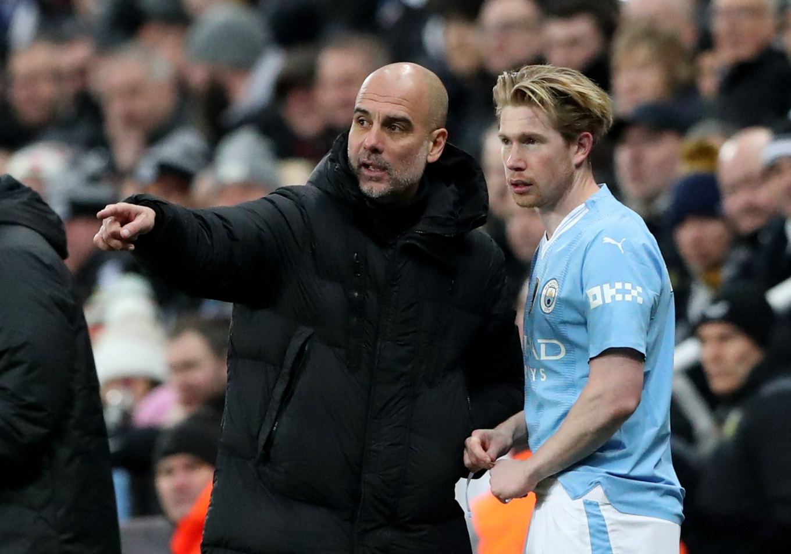
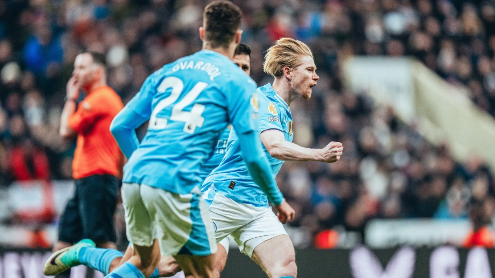

29 Thể thaoNgoại hạng AnhTin tứcChủ nhật, 14/1/2024, 08:48 (GMT+7) Guardiola: 'De Bruyne lẽ ra phải đá phạt ghi bàn' ANHHLV Pep Guardiola bông đùa rằng ông không hài lòng khi tiền vệ Kevin de Bruyne không ghi bàn từ pha chạm bóng đầu tiên trong trận thắng ngược Newcastle 3-2 ở vòng 21 Ngoại hạng Anh. NewcastleMan City Chủ nhật, ngày 14/1/2024, 00:30 Ngoại hạng Anh - Vòng 21 Kết thúc Newcastle Newcastle 2 - 3 Hiệp một: 2-1 Man City Man City icon-ball A. Isak (35') icon-ball A. Gordon (37') B. Silva (26') icon-ball K. De Bruyne (74') icon-ball O. Bobb (90+1') icon-ball Chi tiết trận đấu Phút 69, khi Man City bị dẫn 1-2, De Bruyne được tung vào sân thay Bernardo Silva. Một phút sau, Man City được hưởng quả đá phạt ngay sát vòng cấm và De Bruyne dứt điểm không qua hàng rào. Man City vẫn giữ được bóng và triển khai vào vòng cấm, nhưng Julian Alvarez lại đặt lòng chân trái vọt xà. "Tôi rất thất vọng, buồn bã, gắt gỏng với De Bruyne vì pha chạm bóng đầu tiên của cậu ấy là tình huống đá phạt và cậu ấy không thể ghi bàn", Guardiola bông đùa sau trận.
Sau pha đá phạt hỏng ăn, De Bruyne tỏa sáng giúp Man City ngược dòng. Phút 74, tiền vệ Bỉ nhận bóng ở trung lộ, đẩy hai nhịp rồi dứt điểm từ ngoài vòng cấm qua hai chân trung vệ Fabian Schar về sát cột, đưa bóng ngoài tầm với của Martin Dubravka, quân bình tỷ số. Đây là pha lập công đầu tiên của De Bruyne mùa này, và là bàn thứ 100 mà Man City ghi lưới Newcastle ở Ngoại hạng Anh. Tới phút bù giờ đầu tiên, De Bruyne tiếp tục tỏa sáng với pha treo bóng vào vòng cấm để Oscar Bobb thoát xuống vượt qua Kieran Trippier, ngoặt bóng từ chân trái sang chân phải để loại bỏ thủ môn Dubravka, trước khi đệm vào lưới trống, ấn định tỷ số 3-2. Nhờ đó, De Bruyne thành cầu thủ Man City đầu tiên vừa ghi bàn vừa kiến tạo sau khi vào thay người tại Ngoại hạng Anh kể từ Sergio Aguero trong trận gặp Cardiff vào tháng 1/2014. Theo Guardiola, De Bruyne chưa sẵn sàng thi đấu cả trận sau năm tháng ngồi ngoài vì chấn thương, nhưng ông vẫn ca ngợi tầm ảnh hưởng của cầu thủ người Bỉ trong 30 phút cuối. "De Bruyne là cầu thủ đặc biệt, là huyền thoại, được người hâm mộ Man City yêu mến. Hy vọng trong giai đoạn sau của mùa giải, De Bruyne sẽ giúp chúng tôi cho đến những trận cuối cùng", HLV Tây Ban Nha nói.
